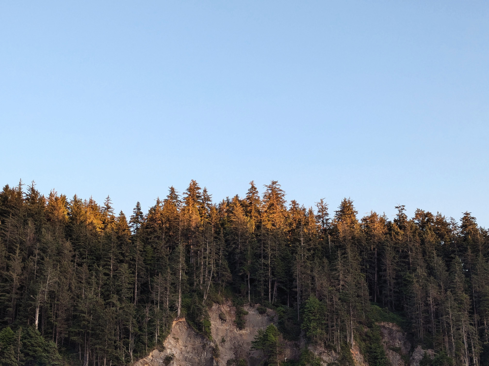

Pacific Northwest (PNW) Plant Pedia is a space for all those interested in learning more about the primary producers of the intricate and complex ecosystem throughout our lush area of the planet!
This site is designed to combine the sophistication of an encylopedia, visual appeal of a photo gallery, and niche botany facts. What could get better than that?! So, whether you're born and raised in the PNW or from the other side of the world, welcome! Explore our pages of popular PNW plants and don't forget to save your favorites along the way.
Your fellow tree huggers,
PNW Plant Pedia


Photos by Anna Terry